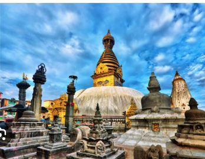
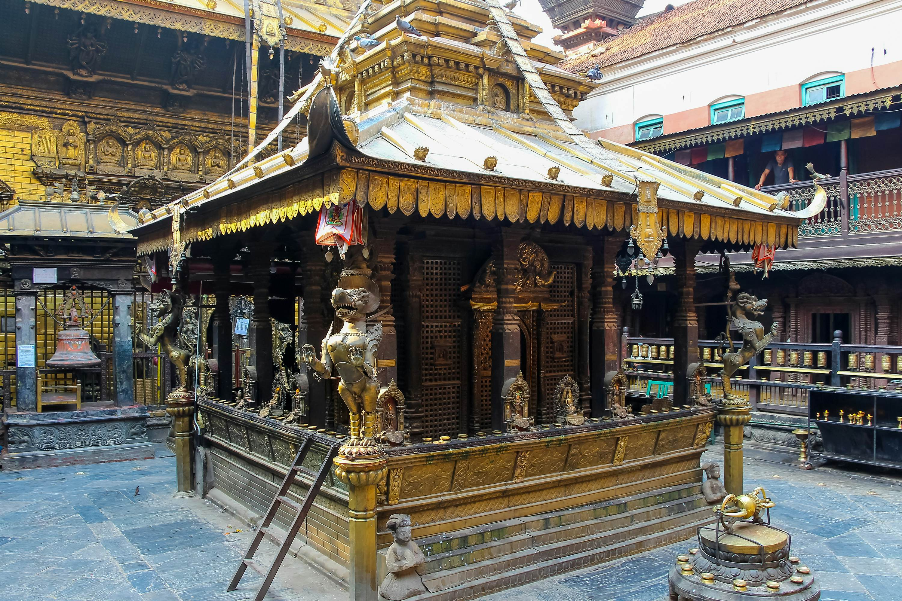
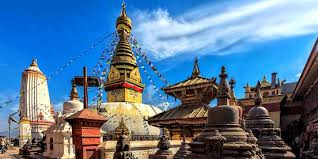
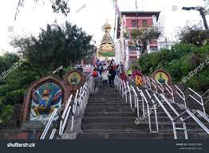
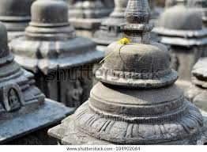

HISTORICAL
PEACEFUL
E-Library for the
NEPAL Nepali Students
E-LIBRARY
⚲
Home
Historical Thinking
Browse History
About

Welcome To Nepali E-library
 The Swayambhunath Stupa is one of the crowning glories of Kathmandu Valley architecture. This perfectly proportioned monument rises through a whitewashed dome to a gilded spire, from where four iconic faces of the Buddha stare out across the valley in the cardinal directions. The site was shaken severely by the 2015 earthquake, but the main stupa sustained only superficial damage.
The entire structure of the stupa is deeply symbolic: the white dome represents the earth, while the 13-tiered, tower-like structure at the top symbolises the 13 stages to nirvana. The nose-like squiggle below the piercing eyes is actually the Nepali number ek (one), signifying unity, and above is a third eye signifying the all-seeing insight of the Buddha.
swayambhunath
swayambhunath Specility



